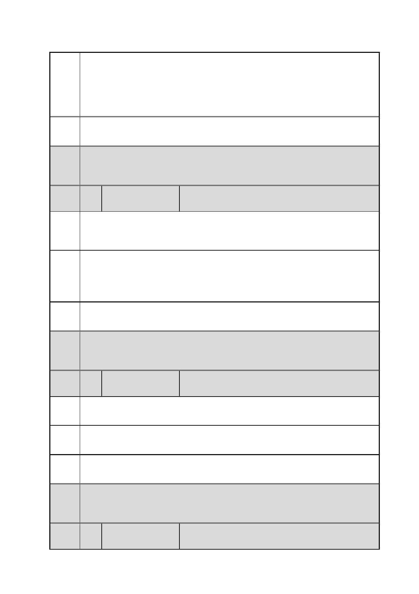

臺北市都市計畫委員會 公民或團體陳情意見綜理表
「變更臺北市信義區逸仙段二小段 33 地號等 21 筆土地（原臺北機廠）
案
名
工業區為創意文化專用區、特定專用區、道路及綠地用地主要計畫案」
及「擬定臺北市信義區逸仙段二小段 33 地號等 21 筆土地（原臺北機
廠）創意文化專用區、特定專用區、道路及綠地用地細部計畫暨劃定
都市更新地區計畫案」
市府 同編號 2 市府回應內容。
回應
委員
會議 內容同編號 1。
決議
編
號
32 陳情人
陳○琪
陳情
理由
1.臺北機廠自有它的歷史重要性，不應隨意拆遷抑或改變地目。
2.居民亦有很多的想法，是否更該一併納入計畫修正，否則是否違反
「都市更新」之初衷呢？
建議
辦法
全區原址保留，改為鐵道博物館的興建，不然只留一個殼子，意義何
在？既然政府有心活化廢棄/遺棄古蹟，亦有資金預算，何不認認真
真地為我們的歷史留下一個完整紀錄？創意文化不該成為商業文
化，敬請三思！！！
市府 同編號 1 市府回應內容。
回應
委員
會議 內容同編號 1。
決議
編
號
陳情
理由
33 陳情人
卓○哲
臺北不需要另外一個”文創園區”。東區不需要另外一個 ”豪宅商
辦”。但臺灣需要有一個活的”鐵道博物館”。
建議 全區保留且原樣保留，仿照國外鐵道博物館經驗，成立臺灣第一座完
辦法 整的鐵道/工業歷史文化園區。
市府 同編號 1 市府回應內容。
回應
委員
會議 內容同編號 1。
決議
編
號
34 陳情人
葉○希
第 41 頁/共 154 頁